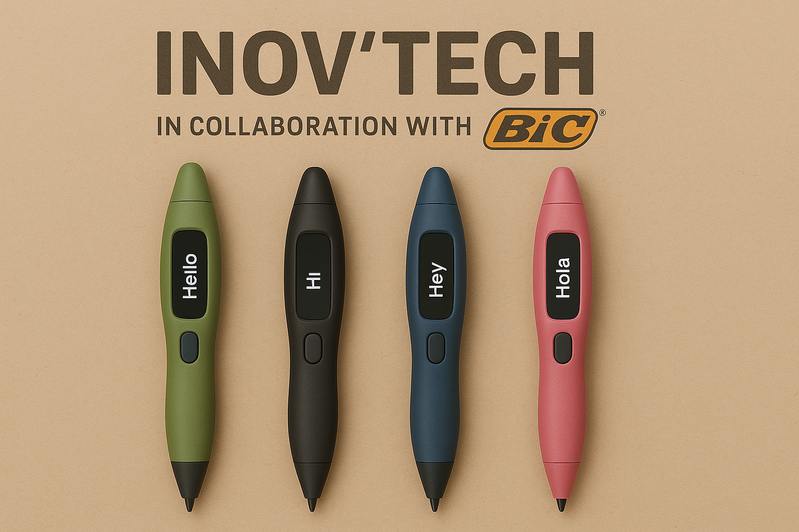
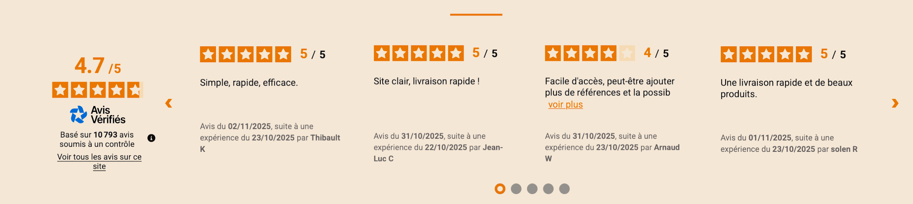

Bienvenue chez INOV'TECH
Créé en 2020, à la suite du Covid-19, Aïcha FOFANA, Codou Diouf FAYE et Meriem MEZDARI, étudiantes au CNAM, décident de lancer INOV'TECH, une entreprise innovante spécialisée dans la création et la vente d'un stylo révolutionnaire : le Translator'Pen ! Inspiré par le besoin de faciliter la communication internationale et d’encourager l’apprentissage des langues, ce stylo combine technologie de pointe et design ergonomique, offrant une traduction instantanée pour plus de 60 langues. Leur objectif est de rendre l’écriture et la communication plus simples, plus rapides et accessibles à tous, tout en mettant l’accent sur l’innovation, la durabilité et le savoir-faire français.

Notre Mission
Mission principale : concevoir et améliorer le BIC Translator Pen, combinant
innovation et simplicité.
IA & technologie : système de traduction instantanée pour +60 langues et
reconnaissance de l’écriture manuscrite.
Collaboration : travail conjoint entre design, marketing et production pour
un stylo performant et ergonomique.
Éco-responsabilité : utilisation de matières recyclées et durables,
fabrication 100 % Made in France.
Prototypage & tests : validation par tests utilisateurs (précision, confort,
fiabilité).
Amélioration continue : mises à jour régulières de l’IA selon les retours
clients.
Objectif global : créer un produit innovant, durable et accessible, reflet
du savoir-faire technologique français.
Ce que disent nos clients
